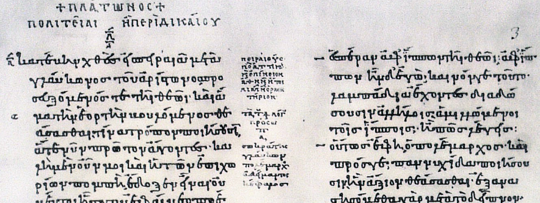

Platonic Markup — Diogenes Laertius excerpt
Read (in Greek) an excerpt from the Lives of the Philosophers by Diogenes Laertius (ca. 3rd century CE), with parallel English translation.
The passage describes the markup or marginal indicia conventionally used by editors of Plato's dialogues. It was written several centuries after Plato wrote and founded the Academy in Athens, suggesting development over generations of scribal and editorial practice.

A partial view of a 9th-century (CE) manuscript of Plato's Republic, with scholia (marginal notes) as well as ... some form of markup? The image is from Wikimedia Commons (public domain).
{kind=link}
Life of Demonax (Lucian of Samosata, Second Century CE)
στάσεως δέ ποτε Ἀθήνησι γενομένης εἰσῆλθεν εἰς τὴν ἐκκλησίαν καὶ φανεὶς μόνον σιωπᾶν ἐποίησεν αὐτούς· ὁ δὲ ἰδὼν ἤδη μετεγνωκότας οὐδὲν εἰπὼν καὶ αὐτὸς ἀπηλλάγη.
Once when the Athenians had collapsed into political discord, he went to the assembly and just by appearing, brought them to silence. When he saw they had relented, he excused himself without a word.
(Lucian, Life of Demonax)
On this site
- Scholia 2026 Reader - experimental design of a dynamic reading interface for intermediate-level students of Ancient Greek. The technology stack is based on TEI XML to support structured authoring and editing of text, translation and glosses. The approach works with any languages supported by Unicode.
- A PDF version of the developer's English translation (only) is laid out for the page.
The translation and notes are by the developer, and any errors are mine. I also contributed the sectioning and section titles. Especially if you have corrections or suggestions for improvement, please provide feedback in the site repository.
The source text is derived from Perseus.org by way of the Scaife Reader XML download feature, which delivers TEI XML. Any corrections or improvements to these texts, along with enhancements (in the form of glosses or translation) are hereby offered back.
On the web
- The Scaife Reader interface to the Perseus text of Demonax may represent the state of the art in interactive readers.
- An amazing resource for the student: The Lucian of Samosata Project.
Homer Studies – ILIAD
Elucidated Iliad (a reader's helper for Homer)
For intermediate and advanced students of Homer, this assisted reader provides hints and help with morphology and grammar interactively, on the page.
About the reader
The design goals of Iliad Elucidated are to complement more fully featured readers elsewhere with something streamlined, lightweight, fast and portable, while providing enough help to the scholar to reward second and subsequent visits. It requires no installation or registration and no live connection: each book of the epic is self-contained and easy to copy and archive, as well as to read and consult. Users are welcome to bookmark pages or to copy and distribute them under the licensing terms.
The reader is meant primarily for review of the poem, secondly for drilling
or quizzing Homeric Greek. An information panel for each noun, adjective and verb
shows its lookup form and grammar along with up to three other occasions of its use
elsewhere in the poem, with links, for comparison or further study. With Show
Hints
some extra help is displayed. In viewers and devices that support hover
(mouse over) events, extra popup tips will also appear. Find in page
(Ctrl/Cmd-F) is
useful, as always, for finding passages (with a Greek keyboard) or line numbers (in any case).
The source data including treebank (the morphological analysis) is gratefully acquired from PerseusDL under CC-BY-SA.
Occasionally small glitches can be found: these can be corrected once located and diagnosed (and please feel free to report).
Homer Scriptorium
Squibs (extracta scribenda)
Cribs (running vocabularies, segmented)
A rendering of the Iliad Venetus A Manuscript, broken into line groups
(squibs
) corresponding to paragraphs in the 1924 translation by A. T. Murray.
1137 pages are available covering all 24 books (15639 lines) of the epic.
In parallel with the squibs, each segment also has a page given to a running vocabulary,
a crib
.
With navigation for these Iliad study aids, links are offered to online resources for further study.
All source texts were acquired from the Internet as noted in their footers. Grateful acknowledgement to the Homer Multitext Project for the transcribed Venetus A (with fabulous TEI encoding); theoi.com for the Murray translation; and to Github user GCelano (Giuseppe Celano) for work integrating morphological data into an encoded Iliad.
Glitches and alignment errors can be corrected: please feel free to report.
How to use the squibs
The squibs are designed for an exercise in language and literature study described below, the Scriptorium Method. Print one page or many. At fifteen lines a day the entire Iliad can be copied in less than three years.
Preview your print job, resetting page size, orientation and scaling options for best
results. A landscape setting can work well. A scratch pad
image in the footer helps
to prevent crowding on a single page; an unwanted final page can be omitted from
printing.
When you want to print more than one or two passages, a single page view of each book may be more convenient.
How to use the cribs (running vocabularies)
The cribs offer vocabulary help in the form of quick lookup of terms found in each of the squibs. Vocabulary terms are listed with links for lookup into the excellent University of Chicago resources Morpho (for morphological analysis) and Logeion (when a dictionary form is given). The short definitions have been extracted from the Scaife Viewer word list for the entire Iliad.
Use this listing for either cursory (review/reminder/confirmation) or deep lookup of terms. With each term the grammatical form is described (thanks to gcelano lemmatized datasets) - it won't tell you what it means to be an aorist but it will tell you it's an aorist. Nouns and verbs get special outlines; other parts of speech are marked. Not all terms or parts of speech are given: for example you are on your own with particles.
These pages are also designed to be printed, for annotation by hand or even for clipping. When you print with a web browser, only the opened (expanded) terms are printed, as the print preview will show. By this means you can limit the print to just the words you want to study.
Scriptorium Technique
The Scriptorium Technique (or method) is an approach to language study developed by Alexander Arguelles and popularized on line. It is especially well suited to studying ancient languages, poetry and literary works in any language.
These pages seek to support the method with technology. Properly speaking, this may
be unnecessary, but it can be conducive to practice: printed and electronic aids can
reduce the need to turn pages or enter terms into search boxes, while offering space
for whatever notes or glosses are helpful for understanding, retention, and later
reference. Squibs and cribs are meant to facilitate this assimilation: before
the final
transcription (which is only, after all, the latest transcription),
the text requires completion, like a coloring book, except using letters, words and
language, not shapes and colors. (Or shapes and colors too.)
Scholia 2026 is an initiative supporting this and related work in language study such as the preparation of assisted readers or desktop-printed micro-editions.
Interesting online Iliad
Starting points for a large and growing field of study
- Logeion at UChicago - awesome resource for vocabulary and morphology study
- Scaife Greek Vocabulary tool set to the Iliad
- Homer Multitext Iliad Browser manuscripts display tool, by citation
- Book I 1-25 in the beyond-translation reader
- Digital Classicist wiki (active 2026)
- TextKit community discussion server (active 2026)
- The Chicago Homer (Kahane, Mueller, Berry, Parod, 2001) a pioneer and exemplar of the form (requires Java)
Also by the developer
- The XProc Zone, a set of XProc demonstration and documentation projects
- Pellucid Literature - more experiments using different production methods (all XML-based)
- XML Jelly Sandwich demonstrations - XSLT in the browser using SaxonJS - includes among others:
- An I Ching engine
- EVE, the Electronic Verse Engineer
- Print your own Ancient Greek Vocabulary flashcards
- All my open source projects on Github
- My business home page